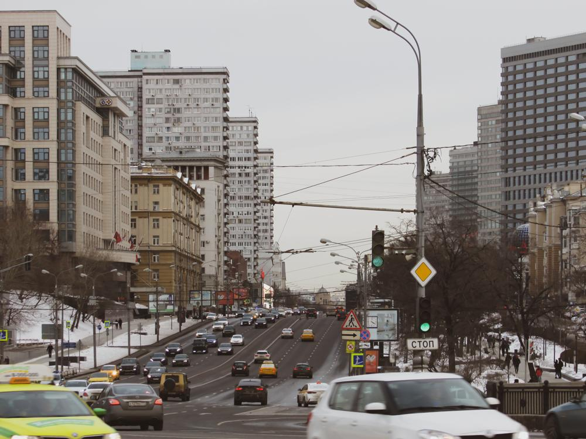
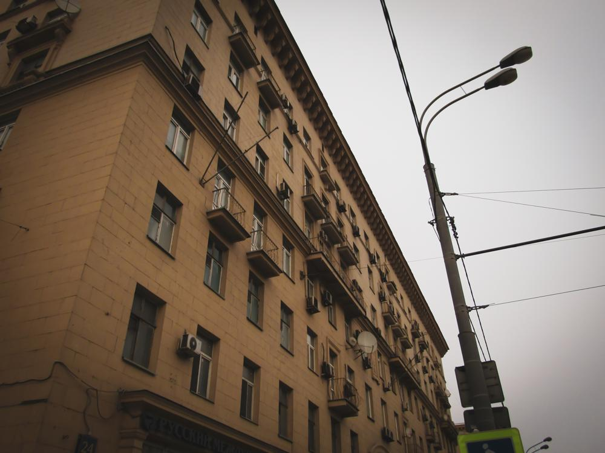

23 февраля. В России в этот день отмечается так называемый День Защитника Отечества. И так как подразумевается, что главные защитники — мужчины, этот праздник является по факту неким мужским днем.
Меня зовут Масахико Амано, по-японски 天人楽彦. Мы с моим другом Майком Алленом решили по-особому отметить этот день. Некоторое время назад нам пришла в голову идея обойти всю Москву пешком. Вдоль и поперек, в буквальном смысле. Мы разработали два маршрута, которые получили названия «Московский Пояс» и «Московская Вертикаль». Это маршруты с востока на запад и с севера на юг города соответственно, о чем, впрочем, нетрудно догадаться из названий. Расчетные расстояния составили соответственно 35 и 42 км. А что, неплохо. Но Майку не особо зашла Вертикаль, поэтому решили начать с Пояса.
Хотели стартовать в 10:19, так как время состоит из числа Майка 10 и моего 19, но это было слишком жестко. Днем ранее я ходил на концерт группы Любэ (кстати, сидел в первом ряду VIP-партера, так-то), с которого вернулся домой во втором часу ночи. Прогулки прогулками, а спать хочется. Поэтому назначили время начала 11:19, ставшее для меня уже традиционным. В это время начинались две мои предыдущие прогулки: Садовое Кольцо (Зима 2019) и Московские Набережные (Зима 2019). Правда, в те разы это было просто совпадением. Итак, в 11:19 мы должны уже быть максимально близко к развязке МКАД — Рязанский проспект. Встретиться условились в 11 часов у метро Выхино на улице Хлобыстова.
Чтобы не проспать, я поставил себе будильник на полдесятого. В итоге проснулся сам на пять минут раньше. Получил от родителей подарки, поел и вышел. Думал дойти до Выхино пешком — 3 км топать — но решил сэкономить ресурсы, мало ли что.
Вышел из автобуса. Погода шикарная. Немного морозило, но с моим пуховиком это особо не ощущается. А перед метро эта СВХ, которая перегородила все входы. Есть там, конечно, туннель, но для Выхино, думаю, узкий — метров 10-15 в ширину. Страшно представить, что там по утрам теперь творится…
Вскоре приехал Майк, и мы направились к месту начала.
Начали!
Мы с Майком оба запустили режим прогулки у себя на телефонах. У нас разные приложения: у меня Mi Fit, у Майка Samsung Health.
Проходим 240 метров и оказываемся у надземного перехода через Рязанку. Думаю, надо сфоткать. Фотоаппарат был еще в рюкзаке, лезть за ним было лень и не нужно, поскольку зум бы здесь не пригодился. Достаю, значит, телефон и ради интереса пытаюсь открыть карту, на которой отмечается пройденный путь. Смотрю — нет этой карты. Что за фигня?
Оказалось, вместо режима прогулки я врубил режим беговой дорожки.
Вот это я быдланулся.
Мда, думал, хоть здесь получится сделать идеальный трек… Хрен там.
— Хорошо хоть заметил через 240 метров, а не 30 километров, — сказал Майк.
Ну, запустил прогулку.
— Когда закончим, добавим к основному пути эти 240 метров. И время, само собой, оставим 11:19, — сказал я скорее себе, чем Майку.
Сейчас у наблюдательных людей должен был возникнуть вопрос: почему последняя фотография сделана с левой (относительно нашего движения) стороны Рязанки, если мы начинали на правой? Потому что до этого большого перехода был еще один поменьше, как раз около которого я и обнаружил свой косяк. Фотать там я тогда раздумал. Перешли по нему (уже не помню, зачем), а потом обратно.
— О! — удивленно воскликнул Майк спустя несколько минут. — Смотри!
— Вот это я понимаю — наша тема! — поддержал я.
И практически сразу за ним показался Государственный Университет Управления.
— У меня там дядя учился, — сказал Майк.
— А у меня мама, — добавил я.
— Кстати, смотри!
— ??
— Основан в 1919 году.
— Кстати да! Вот это комбо!
Когда мы начали подходить к метро Рязанский проспект, на какой-то остановке с крыши прямо на меня капнула немалая такая каплища воды. От неожиданности я вскрикнул.
— Что там? — обернулся Майк.
— Да на меня тут ссанье с крыши капнуло, — ругнулся я.
По-моему это была первая топ цитата за эту прогулку. А всего их было, скажу вам, овер дофига. Настолько много, что их запомнил довольно мало (как бы нелогично это ни звучало).
Кстати, там же появился целый ряд самосвалов и снегоуборочных машин. Или они с самого начала были?..
На улице Паперника нас ждал первый подземный переход за нашу прогулку.
— Готовься бежать, — предупредил я.
— Зачем? — не понял Майк.
— Когда я по Садовому в понедельник ходил, в одном из переходов у меня GPS слетел, и трек на этом месте получился кривой. Быстрее проскочим — меньше вероятность бага.
— А, точняк.
Всего за эту прогулку мы побывали в пяти-шести подземных переходах, и каждый раз бежали.
После улицы Паперника я свернул в дворы.
— Я когда 25-го января тут шел, — начал объяснять я, — у Рязанки шел ремонт, и все было перекрыто.
Вскоре мы убедились, что мое решение было правильным — там ничего не поменялось.
К слову, 25 января этого года была моя первая крупномасштабная прогулка. Причем абсолютно спонтанная. В тот день я ездил на региональный этап олимпиады по астрономии, который проходил где-то около МГУ. Я решил дойти до дома пешком, и прошел 24,25 км. Думаю, это был рекорд моей жизни.
Когда мы стали всходить на Карачаровский мост и перед нами открылся неплохой вид, наши знакомые самосвалы были тут как тут. Взяли и все перекрыли. Хотя, все-таки как-то получилось нормальную фотку сделать.
Хотя это было только сзади. Спереди пока все было чисто.
Кстати, вроде как небо сереет…
Скоро мы оказались около ТЦ Город и наткнулись на строительство метро Нижегородская. Когда мы там пошли в обход по каким-то коридорам, у меня слетел GPS и добавил несколько метров к моему пути. Разница между нашими с Майком пройденными расстояниями сократилась.
Всю дорогу до ТТК нас преследовали те самосвалы.
Кстати, где-то там еще какая-то грязная речка текла. Сфоткал, просто так.
Ну и вид назад, хорошо без самосвалов.
Дошли до ТТК. Что вы думаете? Самосвалы тут как тут.
Правда, они немножко ушли вперед… Увы, это ненадолго.
Посмотрите на фотку выше. Еще чуть-чуть, и она была бы безнадежно испорчена.
Кроме ТТК, Рязанки и самосвалов, там была еще и Курская железка.
Хорошо хоть на железке самосвалов не было…
Да что ж это такое, теперь эти самосвалы даже сзади!
После ТТК Рязанка превратилась в Нижегородскую улицу.
А та, в свою очередь, на площади Абельмановская Застава, в Таганскую. Там наконец-то отвязались от тех самосвалов.
Ну и, наконец, ТЦ ТаБАНка и ТаБАНская площадь… то есть ТЦ Таганка и Таганская площадь.
Что-то как-то пасмурно стало…
Далее мы спустились по Народной улице к Москве-реке и некоторое время шли по набережным.
— О, вид из «Черновика»! — заметил Майк, когда мы почти подошли к парку «Зарядье».
(Не смотрел этот фильм.)
Кстати, сзади небо прикольное. С голубыми полосками.
Что-то тучи не расходятся. Не очень-то погодка сегодня. В начале было круто,а сейчас…
— Я съел деда! — крикнул Майк стоящему на Парящем мосту полицейскому.
Мда, произошла постирония.
Кстати, полицейский на Парящем мосту. Парящий полицейский?..
Дальше мы прошли вдоль Кремля (сто раз там уже был и фоток дофига выкладывал, неинтересно уже), потом пошли на Моховую улицу, откуда свернули на Воздвиженку, которая вскоре перешла в Новый Арбат. Вот там было реально круто.
Там нам попалось какое-то здание (то ли театр, то ли еще что), у которого все стекла были какие-то грязные. Майк не упустил возможность и сотворил этот шедевр:
После Нового Арбата мы свернули в сторону Смоленской, где решили сделать остановку и перекусить в макдаке. От Нового до Старого Арбата шли, кстати, дольше, чем я ожидал.
Пройдено 20 км.
У меня с собой было 500 рублей, и в тот раз я истратил 231. У Майка было меньше, но, думаю, потратился он примерно так же. Я предполагал, мы там посидим максимум полчаса, но в итоге это растянулось на час.
Кстати, вот видео, которое мне в том маке показал Майк. На нем Александр Пушной представляет восьмиструнную гитару, рассказывает о ее особенностях и о том, где она используется, а в конце поет крутой кавер на песню «Переведи меня через майдан».
Поели, передохнули, можно идти дальше.
А вот и Новоарбатский мост. Под нами Краснопресненская набережная, по которой я ходил и в Шайтан прогулке, и в Московских Набережных. И гостиница «Украина». Уже практически родные места.
— Сука, многоэтажка! — вспомнил мем с Варламовым Майк.
На Кутузовском проспекте на многих домах висели сосульки. Мы с Майком решили развлечься и стали эти сосульки сбивать. А на одном из магазинов увидели это.
Она висела довольно высоко, руками не достанешь. Тогда Майк пошел за снежными комками. Два раза пробовал — не получилось. В итоге мы на нее забили и пошли дальше.
А дальше был прикол. Когда я подходил к очередному ряду сосулек, поскользнулся на льду и упал. Просто как в фильмах: ноги уехали вперед, а задница плюхнулась на асфальт. До тех сосулек все-таки добрался.
Виды на Москва-Сити отсюда неплохие.
Впереди — станция МЦК Кутузово.
— А этот дом — самый охраняемый в Москве, — сказал Майк.
— Потому что в нем Брежнев жил.
— И не только Брежнев.
Ну да, там еще Карпов (нет, не тот, который третий сезон) жил. И еще кто-то.
Вот и ТТК. Второй раз за сегодня, только с другого конца.
Когда мы решили перейти на левую сторону, чтобы прогуляться по Поклонной горе, Майк произнес:
— Блястяще. Ну и где тут переход?
Мы на самом деле там немножко заблудились, но все-таки смогли сориентироваться.
Здесь играла военная музыка и в ритм с ней плясали огни на гирляндах.
Высота Монумента Победы составляет 141,8 м. В дециметрах это число равно количеству дней Великой Отечественной войны. Помню, был тут на экскурсии весной 2015 года. Только погода тогда получше была.
Уже темнело. Мой фотоаппарат начал отказываться делать нормальные фотки. Фотка сверху может еще ничего, но она прошла обработку в фотошопе.
Ну а это уже бан.
Вскоре тротуар закончился, а переходов не было. Пришлось идти по снегу, который в любой момент может под тобой провалиться.
— Как по минному полю идем, — заметил Майк.
Там мы проходили мимо ЖК Эдельвейс.
— Сука, многоэтажка! — снова тот мем.
Славянский бульвар. Ну, ясное дело…
— Добрый вечер, славяне! — воскликнул Майк.
Когда мы дошли до Рублевки, уже совсем стемнело. И снег начал идти.
Смазалось, знаю. На моем фотоаппарате выдержка не регулируется.
Ну, можно сказать, финишная прямая. Топаем по Можайскому шоссе до развязки МКАД — Можайское шоссе.
Практически все шоссе было на мосту. Думаю, днем бы получилась классная фотка, но по факту только это.
Да, мы снова перешли на правую сторону, поскольку потом оттуда будет удобнее идти до Молодежной.
19:25. Пришли.
— WE HAVE DONE IT!!! — прокричал Майк.
35,1 км на телефонах у нас обоих.
Почему так, ведь мой отсчет начался на 240 метров позже? Ну, очевидно, потому что GPS частенько лагал.
Ясное дело, решил не добавлять те 240 метров к пройденному пути.
Теперь топаем до Молодежной.
Топать пришлось довольно долго. Этакая надбавка к нашему Поясу.
Чем-то, кстати, на Новогиреевскую эстакаду похоже.
Однако перед тем, как начать путь домой, мы решили заскочить в Кунцево Плаза и там перекусить. У меня осталось достаточно денег, Майку перевели родители.
Изначально мы планировали сесть на Молодежную, но Майк предложил на 300-м автобусе доехать до Октябрьского поля и сесть на МЦК. Ну что, погнали.
На Панфиловской мы купили себе по соку в автомате. Допив свой, Майк заявил:
— Ща заброшу его прямо в мусорку!
А мусорка там была, как вы, наверное, знаете, разделена на четыре отсека для пластиковых, стеклянных, бумажных и несортируемых отходов.
Первый бросок.
Коробка упала совсем рядом с узким продолговатым отверстием.
Второй бросок.
Это было просто идеальное попадание. Коробка идеально вписалась в дырку.
— Ла-адно, — протянул я. — Теперь моя очередь.
Допив свой сок, я бросил коробку.
Вообще мимо. Ветром унесло.
Второй бросок.
Почти.
Третий бросок.
Ударившись о забор, коробка упала четко в круглое отверстие… несортируемых отходов.
Вот это ирония…
Так и завершился наш Московский Пояс. С небольшой добавочкой.
Правда, лично у меня была еще одна добавочка, когда я от Новогиреево топал пешком до дома в двенадцатом часу. Так кайфово было. На улице никого, машин тоже почти нет, во дворах тишина. Красота. Только снег в лицо летел.
— Тадаима!
Вот я и дома.
Завтра стало сегодня, а сегодня стало вчера.
Всего за 23 февраля 2019 года Масахико Амано сделал 61000 шагов. Новый рекорд.
Красивое число.
Кстати, если его повернуть на 180 градусов, то получится 00019.
Честно говоря, раньше я никогда не верил, что так просто смогу обойти буквально всю Москву. Ведь даже на машине ехать очень долго.
Смог. Причем даже ноги особо не болели, не считая задней части правого бедра. Сначала я не мог понять, в чем дело, почему именно там, а потом вспомнил, что на это место я плюхнулся, когда поскользнулся на Кутузке…
И праздник я отметил шикарно. Лучше, чем когда-либо в своей жизни.
Что ж, это только начало.
В планах еще много отличных прогулок.
Пока самые масштабные из них (сделаю небольшой анонс) — Московская Вертикаль (суть — пересечь Москву с севера на юг) и Полтос (стартуем у моего дома, делаем крюк в Лефортово, обходим по Садовому, идем в парк Покровское-Стрешнево, немного там гуляем, потом в Октябрьское поле и затем оттуда к Вегасу, расчетное расстояние 55 км). Насчет Вертикали ясно пока мало, но Полтос однозначно будет на апрельских каникулах.
А эти февральские каникулы были просто потрясны. Садовое Кольцо, Московские Набережные, Московский Пояс а также отличный день в гостях у Владоса. Всего за неделю пройдено более 100 км. Куда уж круче? Круче будет, наверное, только на апрельских каникулах.
© Text and photos by Masahiko AMANO aka H1K0